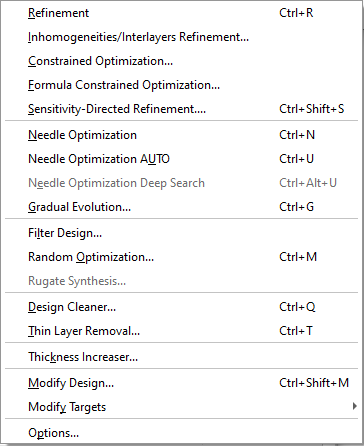

Synthesis Menu
- Refinement
- Refinement Window
- Inhomogeneities/Interlayers Refinement
- Constrained Optimization
- Formula Constrained Optimization
- Sensitivity-Directed Refinement
- Needle optimization
- Needle Variation Window
- Gradual Evolution
- Filter Design
- Random Optimization
- Rugate Synthesis
- Design Cleaning
- Removing thin layers
- Modify Design
- Modify Stack
- Modify Target
- Analysis and Synthesis Options
Synthesis Menu
Navigation: OptiLayer Menu Commands >
Synthesis Menu
` <filter_production_yield.html>`__ ` <idh_optilayer.html>`__ ` <idh_refinement.html>`__
This menu enables access to a variety of OptiLayer Refinement and Synthesis Tools. Most of them can be activated by keystrokes (shown in parentheses after the command names).


Refinement/ (Ctrl+R): The Refinement command starts the Refinement procedure to adjust the layer thicknesses of the current design.
Inhomogeneities/Interlayers Refinement…/ This option allows for the refinement of the coating design while considering bulk inhomogeneity of coating layers and interface microroughness.
Constrained Optimization… This command enables complex refinement procedures with individual limits for layer thicknesses and optimization of groups of design layers.
Formula-Constrained Optimization…/ This feature allows for optimizations based on the formula representation of a multilayer coating.
Sensitivity-Directed Refinement… This refinement method is based on specialized refinement, where layers are released for refinement based on their sensitivities.
 / / Needle Optimization/
(Ctrl+N): Initiates the Needle Optimization procedure in manual mode.
/ / Needle Optimization/
(Ctrl+N): Initiates the Needle Optimization procedure in manual mode.
 /
/
Needle Optimization AUTO/ (Ctrl+U): Begins the Needle Optimization procedure in automatic mode, where each layer insertion is followed by a refinement step until an optimal solution is achieved or interrupted by the user.
 Needle Optimization Deep
Search (Ctrl+Alt+U): This variant of
the Needle Optimization should be used when interested in a design with
high performance, as it explores all possible needle insertions and
refinements before moving forward.
Needle Optimization Deep
Search (Ctrl+Alt+U): This variant of
the Needle Optimization should be used when interested in a design with
high performance, as it explores all possible needle insertions and
refinements before moving forward.
Gradual Evolution/ (Ctrl+G): Starts the Gradual Evolution procedure.
WDM Filter…/ (Ctrl+W): A comprehensive procedure for designing WDM Filters.
Inhomogeneous Refinement/ (Ctrl+H): Allows the user to obtain designs through the refinement of refractive indices and, optionally, extinction coefficients and thicknesses.
Random Optimization/ (Ctrl+M): For creating and optimizing a set of random designs to find practical solutions or select starting designs for other synthesis procedures.
Rugate Synthesis/ A specialized option for designing a rugate with user-controlled smoothness in refractive index profile.
De-Sensitization…/ (Ctrl+Alt+D): A refinement tool to decrease the sensitivity of the final design to thickness errors.
Design Cleaner/ (Ctrl+Q): Automatically simplifies a design within allowed limits of the merit function increase.
Thin Layer Removal…/ (Ctrl+T): Allows the user to remove thin layers from the final design in automatic and manual modes.
The “Add Target Points” menu command is used to modify the loaded target, which may be necessary when design spectral characteristics exhibit significant oscillations between existing target points. This feature automatically inserts additional target points at appropriate wavelengths to mitigate these oscillations. The target values at the new spectral points are determined through linear interpolation.
Several entries in the / Modify submenu/ of Synthesis Menu, such as / Modify Design/ , / Modify Stack/ , / Modify Target/ , / Modify Integral Target/ , / Modify E-Field Target/ , / Modify Layer Absorptance Target/ , and / Modify Color Target/ allow the user to modify data in the computer’s memory without impacting the stored database. This is useful for making temporary changes that can later be saved permanently by using commands like Save Design, Save Stack, Save Target, Save Integral Target, and Save Color Target in the / Data Menu).
Options…/ Activates the window for / Setting Analysis and Synthesis Options to select characteristics, graphics settings, materials used, etc.